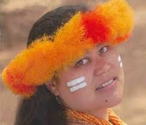

.png)
.png)
.png)
.png)

Welcome to the Guåhan homepage for the Occidental College MAC 250 students, HKU partners, and IWNAM participatory media project, completed in the Spring of 2021. Over the course of the Spring semester, the MAC 250 students Emma, Sarah, Julie, Maddie, and HKU Partner Bonnie were able to collaborate with the International Women's Network Against Militarism (IWNAM) and engaged activist Lisa Linda Natividad in a series of interviews to dive deeper into the current standing of Guåhan's (Guam) demilitarization and decolonization endeavors.
As previously stated, we had an array of goals for this project, which included: Strengthening our common consciousness and voice by sharing experiences, Creating accessible and legible knowledge for a vast audience on the topic of CHamoru and Guåhan sovereignty, and continuing the work of transpacific coalition-building started and propelled by organizations of activists such as the IWNAM.
Lisa Linda Natividad, a daughter of the Se'mon and Senen clans from Mangilao, Guåhan. She is a Professor of Social Work at the University of Guam, the primary convener of the Guåhan Coalition for Peace and Justice, and a founding member of I Hagan Famalao'an Guåhan. She is an indigenous CHamoru who has championed the exposure of the human rights violations against her people and homeland Guåhan, which is a military colony of the United States. She has spoken globally on the topics of demilitarization, decolonization, and the critical role women play in the creation of safe and thriving communities. Dr. Natividad has presented interventions on the halting of the massive military build-up on Guåhan before the United Nations Fourth Committee, Decolonization Committee, and the Permanent Forum on Indigenous Issues. She is the grand-daughter Bernadita and Jose Quichocho Salas and the daughter of Concepcion and Paul Natividad. She is also the mother of Atdao-mami Natividad and lives in the village of Inalahan, Guåhan.
We are honored to have spoken with Lisa Linda Natividad tackling the topics related to how militaristic influence create barriers to trans-pacific solidarity, discussing the recent methods of decolonization which CHamoru people are undertaking for indigenous solidarity, and how to create a holistic understanding of what a de-colonized imagined future looks like for the CHamoru people and Guåhan.
Before beginning, note that we use "CHamoru," throughout our project, reflecting Lisa's research which states: "CHamoru is the phonetically correct, indigenous spelling of the word referring to the indigenous people of the Mariana Islands and their spoken language;" as well as our use of Guåhan as, "it is the indigenous name for the island of Guam, meaning "we have" in the indigenous language."
The focus of our initial interview with Lisa Natividad was to round out the concept of love in connection with demilitarization work, decolonizing land and people, and discovering a route to liberation. Even more importantly, Lisa made clear the division between fear and love, and how that leads to increased militarization in a region like Guåhan, which has been colonized since 1668 and has resulted in a complex and destructive system of dependency. Lisa calls it the "dependency of the mind," and talked to us at length about the way that colonization permeates land, communities, and settles deep inside the psyche of the colonized. As Lisa reinforced throughout our interview with a myriad of personal and political experiences, The U.S. does not have a relationship of love with Guåhan or any of its colonized military base locations. Lisa spoke: "As a colonized people, it's not glamorous… you look at all the social indicators from poverty to homelessness to drug and alcohol addiction, abuse, domestic violence. We top the charts in all of those issues."
With such a breadth of issues to cover and stories to tell, we hope the content you find here is a small drop in the ocean of knowledge we all continue seeking in our fight to demilitarize the nation of Guåhan, and all other Pacific Island communities currently colonized by the United States, and as a result, exceptionally over-militarized at the fate of Native populations and sacred homelands.